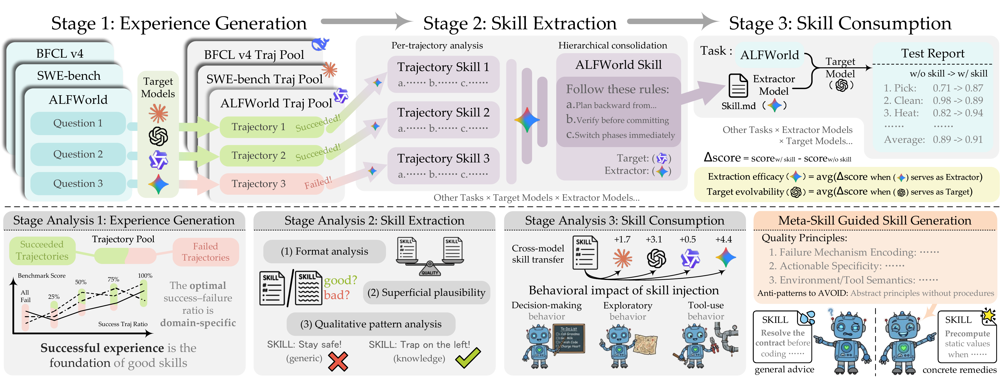

Qihao Yang
Hi! I'm Qihao (杨起豪), a Ph.D. student at the School of Artificial Intelligence, Shanghai Jiao Tong University, advised by Zhihang Zhong, Xue Yang, and Junchi Yan.
Onward and upward.
Research Interests.
My research focuses on embodied spatial intelligence and self-evolving agents. I am interested in how agents learn from experience, reason about the world, and develop more reliable capabilities.
In particular, I study two closely connected directions:
- Embodied Spatial Intelligence:understanding space and time, and supporting long-horizon planning and reasoning in interactive environments.
- Agent Self-Evolution:improving agents through reusable skills, feedback-driven optimization, and systematic evaluation.
Selected Work.
* denotes equal contribution.

SkillLens
From Raw Experience to Skill Consumption: A Systematic Study of Model-Generated Agent Skills
More on Google Scholar